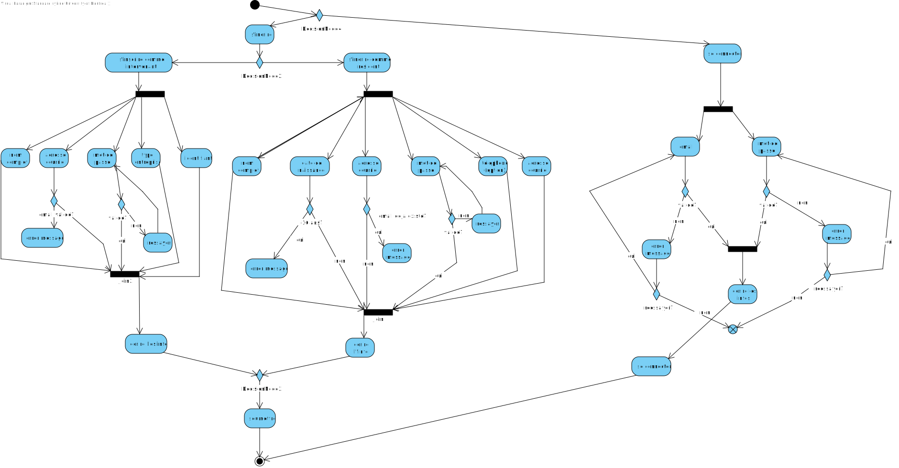
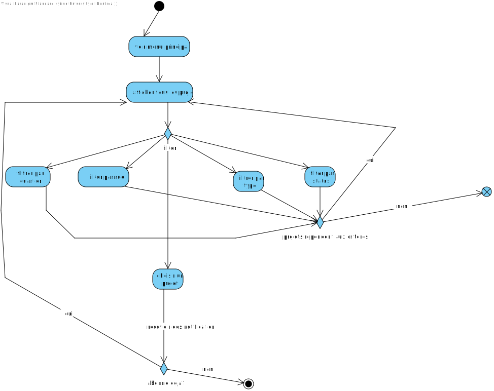
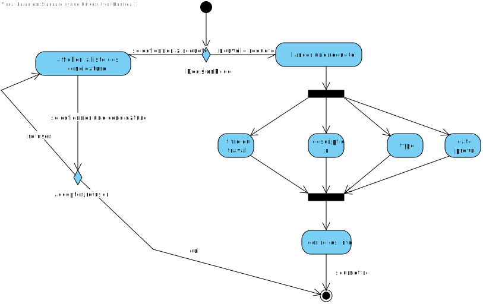
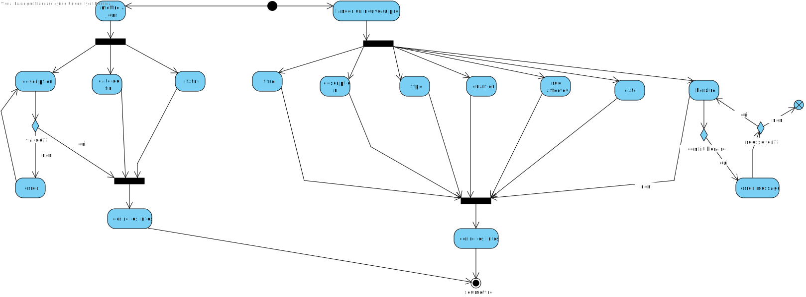
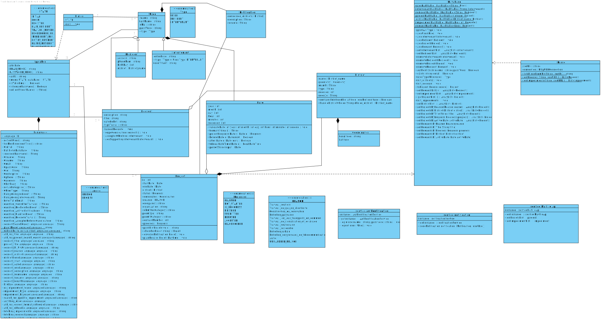
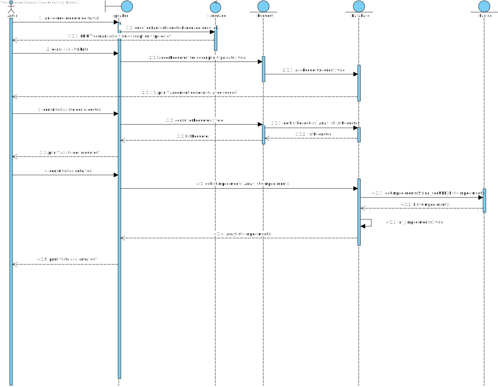

Cadre du projet
Introduction
Les chantiers routiers à Montréal sont une réalité récurrente et ininvitable dans la ville.
Les résidents de Montréal ne reçoivent pas les informations concernant les chantiers de façons efficaces, ce qui engendre des imprévus pour les déplacements de ceux-ci.
La création de l'application « MaVille », servirait à rapprocher la communication entre les résidents et les intervenant, ainsi permettant une communication et planification plus clair des travaux.
Échéancier
1 - 7 décembre :
- Othmane : Mise à jour de la conception , des diagrammes de classe/séquence et de l'architecture.
- Oscar : Développement de l'implémentation des nouvelles fonctionnalités.
- Syrine : Mise à jour du rapport d'analyse des exigences et des besoins.
8 - 10 décembre :
- Othmane : Finalisation du diagramme de classe et de séquence et de l'architecture.
- Oscar : Intégration des fonctionnalités principales et des tests unitaires.
- Syrine : Développement de l'interface graphique (frontend) pour le bonus.
11 - 13 décembre :
Othmane : Révision des diagrammes et documentation associée.
Oscar : Tests unitaires et génération du rapport JaCoCo.
Syrine : Complétion de la documentation et intégration des liens Javadoc dans le rapport.
14 - 15 décembre :
Équipe : Intégration finale, vérifications, et livraison du projet.
Hypothèses (optionnel)
• Les intervenants fourniront des informations complètes et à jour sur les travaux publics et privés.
• La majorité des utilisateurs auront une connexion internet stable, ce qui est essentielle pour accéder aux fonctionnalités en temps réel de l'application.
• Les données sur les travaux en cours ou planifiés seront disponibles via des API fiables, pour permettre leur intégration dans l'application.
• Les notifications personnalisées augmenteront l'engagement des utilisateurs et favoriseront leur participation active à la planification participative.
Exigences
Après de nombreuses rencontres avec le client et une familiarisation avec les activités de recyclage et compostage, nous avons préparé un glossaire rassemblant les termes et expressions clés caractérisant l'environnement.
Glossaire
- Résident
- Personne vivant à Montréal qui consulte les travaux ou soumet des requêtes via l'application.
- Intervenant
- Entité (publique, privée ou particulier) qui réalise ou planifie des travaux affectant la ville.
- Chantiers
- Lieux où se déroulent des travaux publics ou privés, causant des perturbations.
- Travaux publics
- Travaux réalisés par la Ville ou ses partenaires pour améliorer l'infrastructure urbaine.
- Travaux privés
- Travaux réalisés par des entrepreneurs privés.
- Notifications personnalisées
- Alertes spécifiques envoyées aux résidents pour les informer des changements ou avancées des travaux affectant leur quartier ou leurs préférences.
- Quartier
- Secteur géographique de Montréal auquel un résident est associé ou qui est affecté par des travaux.
- Type de travaux
- Catégorie spécifique des travaux, comme les travaux routiers, de gaz, d'électricité, etc.
- Projet de travaux
- Ensemble d'activités planifiées par un intervenant concernant des travaux publics ou privés.
- Requête de travail
- Demande soumise par un résident pour réaliser des travaux spécifiques dans son quartier.
- Statut du projet
- État d'avancement du projet de travaux, comme "Prévu", "En cours" ou "Suspendu".
- Application MaVille
- Plateforme numérique conçue pour améliorer la communication et la coordination entre les résidents, les intervenants, et la Ville de Montréal.
- Code de la ville
- Identifiant unique à 8 chiffres attribué par la Ville de Montréal aux intervenants pour leur permettre de s'inscrire à l'application.
- Service Info Entraves et Travaux
- Système existant de la Ville de Montréal fournissant des données sur les entraves routières et les travaux en cours, intégré dans l'application via une API.
- Planification participative
- Fonctionnalité permettant aux résidents de partager leurs préférences sur les horaires des travaux dans leur quartier et de consulter les préférences des autres résidents.
- Horaire des travaux
- Période spécifique pendant laquelle les travaux sont planifiés ou exécutés, incluant des plages horaires précises pour minimiser les impacts.
- API municipales
- Interfaces fournies par la Ville de Montréal permettant d'obtenir des données actualisées sur les travaux et entraves routières.
Persona (optionnel)
Cas d'utilisation
Notes à propos du diagramme
- choix des acteurs
- choix des relations
Scénarios
Scénario principal
- Le résident clique sur "Nouveau compte".
- Le résident remplit les informations : nom complet, date de naissance, adresse courriel, téléphone, adresse résidentielle.
- Le résident choisit un mot de passe.
- Le résident soumet la demande.
Scénarios alternatifs
Scénario principal
- L'intervenant clique sur "Nouveau compte".
- L'intervenant remplit les informations : nom complet, adresse courriel, téléphone, type d'entreprise, identifiant de la ville (code à 8 chiffres).
- L'intervenant choisit un mot de passe.
- L'intervenant soumet la demande.
Scénarios alternatifs
Scénario principal
- Le résident ouvre une nouvelle session.
- Le résident clique sur "Travaux".
- Le système affiche la liste des travaux en cours et à venir dans le quartier du résident.
Scénarios alternatifs
Aucun.
Scénario principal
- Le résident se connecte à son compte.
- Le résident accède à la liste des travaux.
- Le résident choisit "Rechercher un projet".
- Le résident sélectionne la catégorie de recherche : type, titre, ou lieu.
- Le résident voit les résultats de la recherche.
Scénarios alternatifs
Scénario principal
- Le résident se connecte à son compte.
- Le résident choisit le projet souhaité.
- Le résident coche la case "Notification".
- Le système enregistre les préférences de notification du résident.
Scénarios alternatifs
Aucun.
Scénario principal
- Le résident se connecte à son compte.
- Le résident choisit le projet à venir souhaité.
- Le résident clique sur "Planifier".
- Le résident choisit entre l'horaire préféré ou consulte les préférences des autres résidents.
- Le résident peut publier un avis sur ses préférences.
Scénarios alternatifs
Aucun.
Scénario principal
- Le résident se connecte à son compte.
- Le résident choisit "Requête de travail".
- Le résident remplit les informations : titre du travail à réaliser, description détaillée, type (sélectionné à partir de la liste des types de travaux), date de début espérée.
- Le résident soumet la demande.
Scénarios alternatifs
Aucun.
Scénario principal
- Le résident se connecte à son compte.
- Le résident choisit "Requête de travail".
- Le résident voit la liste des requêtes approuvées.
- Le résident choisit le projet concerné.
- Le résident accepte ou refuse la candidature de l’intervenant.
- Le résident soumet la décision.
Scénarios alternatifs
Aucun.
Scénario principal
- Le résident se connecte à son compte.
- Le résident choisit "Signaler un problème".
- Le résident remplit les informations : nom, adresse courriel, adresse de résidence, type de problème, description du problème.
- Le résident soumet la demande.
Scénarios alternatifs
Aucun.
Scénario principal
- L'intervenant se connecte à son compte.
- L'intervenant choisit "Nouveau projet".
- L'intervenant entre les informations nécessaires : titre du projet, description du projet, type de travaux, quartiers affectés (liste de quartiers prédéfinis), rues affectées (liste de rues), date de début, date de fin, horaire des travaux.
- L'intervenant soumet le projet.
Scénarios alternatifs
Aucun.
Scénario principal
- L'intervenant se connecte à son compte.
- L'intervenant consulte la liste des projets.
- L'intervenant choisit le projet concerné.
- L'intervenant clique sur "Mise à jour".
- L'intervenant change les informations : mettre à jour la description du projet, mettre à jour la date de fin prévue, changer le statut du projet (En cours, Suspendu, Terminé).
- L'intervenant soumet la mise à jour.
Scénarios alternatifs
Aucun.
Scénario principal
- L'intervenant se connecte à son compte.
- L'intervenant consulte la liste des requêtes de travail approuvées.
- L'intervenant choisit une requête de travail.
- L'intervenant dépose sa candidature.
Scénarios alternatifs
Aucun.
Diagramme d'activités
Diargamme d'activité pour l'inscription
Diargamme d'activité pour consulter les projets
Diargamme d'activité pour les requêtes
Diargamme d'activité pour les projets des intervenants
Diargamme d'activité principal

Diargamme d'activité : gestion des comptes

Diargamme du flow d'activités : gestion des requêtes

Diargamme du flow d'activités : gestion des projets

Diargamme du flow d'activités : gestion liste de projets

Diargamme du flow d'activités : gestion des candidatures des requêtes de travail

Conception
Architecture et choix de design
Architecture - modèle C4


Choix de design
Pour l'application MaVille, nous avons choisi un design qui repose sur une approche modulaire qui sépare les responsabilités entre l'interface, le Backend, et les composants internes. L'interface est structuré autour des composants Dialog et Speaker, qui gèrent les interactions utilisateur et l'affichage des message. Le Backend, quant à lui, intègre des composants comme Database pour la gestion des données, Parser pour les appels à l'API externe, Writer pour la sauvegarde locale des données, et Language pour le support multilingue. Cette séparation améliore la maintenabilité et réduit le couplage, pour ainsi faciliter l'ajout de nouvelles fonctionnalités. Les communications sont basées sur REST pour les interactions avec l'API Info entraves et travaux et sur des appels interne pour les composants de l'application.
Diagramme de classe
Diagramme de séquence
Analyse
Risques
- Les données des travaux en cours ou planifiés ne sont pas à jour ou actualisés en temps réel, ce qui fait que les utilisateurs basent leur planification sur des informations erronées. La solution serait d'implémenter des appels API périodiques pour synchroniser les informations de manière automatique et garantir leur fiabilité.
- Les informations fournies par les intervenants (par exemple, type de travaux, dates, ou emplacements) pourraient être incorrectes ou incomplètes , ce qui pourrait entraîner des fermetures de routes imprévues ou des changements non signalés. La solution serait d'ajouter une étape de validation des données lors de leur soumission, avec des règles standardisées pour les intervenants.
- Les préférences des résidents pour les plages horaires des travaux pourraient être incompatibles ou contradictoires avec les contraintes des intervenants. La solution serait de mettre en place un système de pondération et de priorisation des préférences pour équilibrer les besoins des résidents et des intervenants.
- La requête pour un travail déjà effectué pourrait entraîner des duplications inutiles. La solution serait de mettre en place un bon système de vérification des travaux existants/planifiés et d'avoir un moteur de recherche efficace permettant de retrouver les travaux précédents.
- Le manque de confidentialité de l'application pourrait engendrer une violation de la vie privée, puisque l'application collecte des données personnelles. La solution serait d'implémenter une politique de confidentialité transparente pour informer les utilisateurs et leur donner des options pour décider de la collecte et de l'utilisation de leurs données.
- Si les notifications ne sont pas suffisamment ciblées, cela pourrait entraîner la désactivation des notifications par certains utilisateurs. La solution serait de permettre aux utilisateurs de personnaliser les notifications, notamment leur fréquence et leur type.
Besoins non-fonctionnelles
- Interface intuitive : L'application doit être facile à utiliser pour les utilisateurs de tous âges, avec une navigation simple et claire.
- Soutien technique disponible : Un support technique doit être disponible via plusieurs canaux (email, chatbot, téléphone) et réactif, avec des FAQ et tutoriels intégrés à l'application pour répondre aux questions fréquentes.
- Mises à jour fréquentes : L'application doit être régulièrement mise à jour pour garantir la précision des données et l'ajout de nouvelles fonctionnalités.On doit également les annoncées aux utilisateurs via les notifications.
- Multilinguisme (anglais et français): Pour répondre aux besoins des résidents de Montréal, l'application doit être disponible en anglais et en français.
- Fiabilité : L'application doit être accessible en tout temps, surtout en cas de travaux urgents ou imprévus. Une bonne disponibilité permet aux utilisateurs de consulter les informations sans interruption, ce qui est important pour planifier leurs déplacements efficacement.
Besoins matériels
Pour l'application MaVille les besoins matériels incluent les infrastructures nécessaires pour assurer le bon fonctionnement et l'exploitation de l'application. Donc, on a besoins des serveurs dédiés performants pour gérer les requêtes en temps réel et la mémoire requise qui stockera dans une base de données les informations des utilisateurs et des travaux. Ainsi qu'un réseau performant pour garantir une connexion rapide et stable pour les utilisateurs. Des postes de travail et un environnement de test dédié pour le développement et la validation des fonctionnalités sont également nécessaires pour les développeurs et l'équipe de gestion technique.
Solution de stockage
Pour l'application MaVille, une solution de stockage basée sur une base de données relationnelle est meilleure pour bien gérer les informations structurées telles que les projets de travaux, les requêtes des résidents, et les notifications. L'architecture de stockage serait distribuée sur une solution cloud pour assurer une haute disponibilité, la scalabilité et un accès rapide aux données.On implementera également une solution de stockage des données des utilisateur à l'aide des tables de hachage. Des mécanismes de sauvegarde automatiques et réguliers doivent être mis en place pour garantir la récupération des données en cas de panne. La solution prend en compte les exigences de sécurité (chiffrement des données), de performance (accès rapide), et d'intégrité des données pour assurer la fiabilité du service à long terme.
Solution d'intégration
Pour l'application MaVille, la solution d'intégration repose sur l'utilisation des API ouvertes proposées par la Ville de Montréal, comme le service Info entraves et travaux, pour obtenir des données actualisées et cohérentes sur les chantiers et entraves. Ces APIs permettront une communication fluide avec les systèmes municipaux et assureront une synchronisation en temps réel des informations. L'application devra également s'interfacer avec des services tiers pour la gestion des notifications en temps réel, en adoptant des formats standards (JSON) pour garantir une opérabilité optimale et une extensibilité future.
Implémentation
Les commande d'exécution, comptes préconfigurées pour exécuter et tester sont disponibles en détails dans le Readme du projet. .